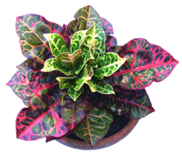

Deskripsi Tanaman
Puring 'Tao Thong'
Dikenal dengan sebutan puring kura. Tanaman yang masuk kategori 'croton' ini mempunyai bentuk daun yang agak keriting di bagian tepi.
Foto
Puring 'Tao Thong'

Link Eksternal
Puring 'Tao Thong'
Berbagai informasi lebih lanjut dilihat di...